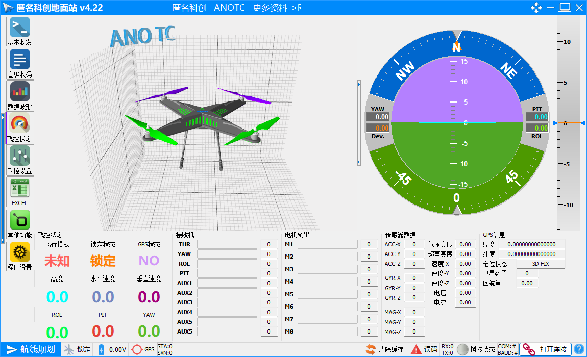

导航与状态估计
捷联式惯性导航-九轴 IMU 姿态解算与系统开发
九轴驱动、四元数融合和异常拒绝，连接传感采集与高频姿态输出。
500 Hz 姿态更新
技术实践
- 基于 CH32V307VCT6 与 ICM20948 搭建九轴姿态测量系统，完成传感器驱动、数据采集、融合解算及串口输出的嵌入式开发；
- 开发 SPI 连续读写与寄存器分区管理，通过片内 AUX I²C 驱动 AK09916 磁力计，完成九轴数据解析、量程配置与物理量转换；
- 实现基于四元数的九轴 AHRS 姿态融合算法，融合陀螺仪、加速度计及磁力计数据，设计陀螺零偏在线估计与加速度、磁场异常拒绝机制；
- 基于 TIM1 定时中断实现 500Hz 姿态更新，输出横滚角、俯仰角、航向角及地理坐标系去重力加速度，通过串口完成姿态数据输出与调试。
项目图片
